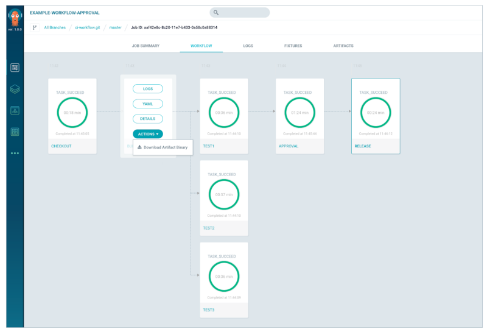
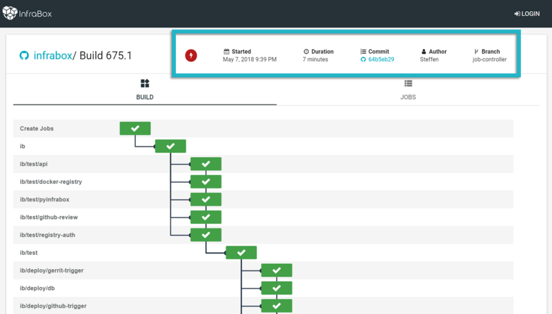
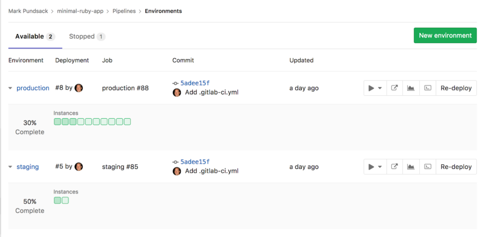
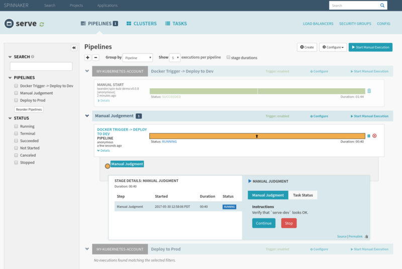
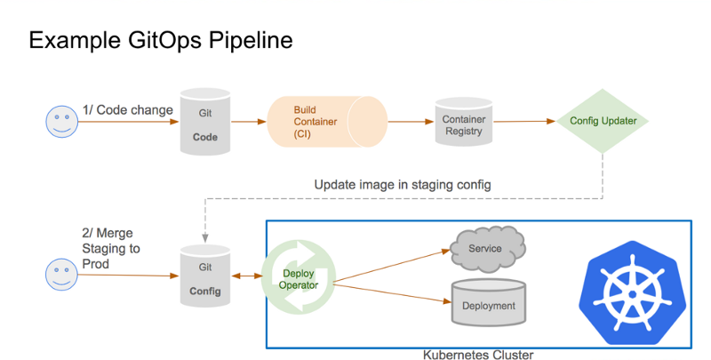

State of Cloud Native CI/CD Tools for Kubernetes
Originally appeared on Opsgenie Engineering Blog
Cloud Native is a new approach to build and run applications that can leverage the cloud computing delivery model. The objective is to improve speed and stability by optimizing the pipeline by leveraging Cloud Native model at each step, from coding to production, by making use of tools, such as containers and orchestrators, combined with additional tooling. As Cloud Native environments get more and more attraction, the tooling around these environments continue to evolve to fit the various needs.
A critical aspect of the modern development is Continuous Integration and Continuous Delivery. Ability to continuously push, test and deploy the code in lab, staging and production environments is an undeniable blessing for development. With the rise of containerization, the rapidness of this cycle has increased tremendously as both build and deployment stages continue to be containerized. However, the tooling for CI and CD must also keep the same pace to stay relevant in this crazy development world.
In this blog post, we will be introducing most promising CI and CD tools for Cloud-Native landscape or in other words pipeline tooling. We’ll also mention some other tools that are slightly Cloud Native compatible but promising.
Argo
First one in the list is Argo. Created by Applatix, Argo is one of the most Kubernetes compatible Cloud Native CI/CD solution, as it extends and makes use of Kubernetes APIs. Argo makes use of Custom Resource Definitions (CRD) where the pipeline itself is defined as Kubernetes objects. Custom controller listens to the changes on those objects and makes sure the pipelines are run properly. Using CRDs are the recommended way to extend Kubernetes functionality as it provides a standardized approach to define and watch the changes in arbitrary objects.
You can define pipelines as simple YAML files in Argo. Those pipelines can be used as CI, CD, Data Processing. There are many examples in the Argo repository. It also supports artifacts, templating and parameterization, variable substitution which makes pipelines reusable. As steps in a pipeline are run as Pods, you can make use of sidecar containers for services such as databases, volumes, secrets, config maps which might be helpful for defining your pipelines. Argo also features a nice UI where you can keep track of your runs.

Jenkins X
Jenkins, formerly Hudson, is the lead open source automation software. Jenkins X is a new and opinionated Cloud Native CI/CD approach, which aims to require less intervention to pipeline configurations by providing strong defaults. It has a CLI, jx, which can create projects from templates, such as Spring Boot applications. Jenkins X also supports GitOps, where environment promotions are done via commits and environments created for each pull requests. It also comments on issues with feedback about the state of your code’s deployment. Under the hood, it uses Skaffold for image generation and CRDs of Kubernetes to manage the pipeline activity.
Although you can import existing projects, but Jenkins X seems a better fit for newly created projects, as it includes quick start templates and less documentation for importing existing projects. However it is not hard to add your own buildpacks by providing your own Jenkinsfile and Dockerfile. Jenkins X looks highly opinionated compared to regular Jenkins, which is intensely customizable. For instance, “jx import” command even creates a git repository in Github for your project, registers a Webhook to capture git push events and creates a Helm chart for your project. Although there are more than a thousand ways to accomplish the above with old Jenkins, Jenkins X seems to ease the operations for beginners and make a quick introduction to Cloud Native CI/CD but it’s default values and existing quick start templates might not be suitable for everyone, but as said before it is easy to extend it with buildpacks.
InfraBox
A new open source project by SAP, InfraBox is a continuous integration system based on Kubernetes. The project aims to be Cloud Native and seeks to utilize the resources of a cluster to avoid waste of resources. Unlike Argo, it does not make use of CRDs, but uses custom JSONs for defining a pipeline. InfraBox runs each step in Docker containers and allows building Docker images as well. There is also support for caching, timeouts, and secrets.
You can create dynamic pipelines, where steps are resolved while running a pipeline. As different from other solutions, InfraBox has a special support for tests, and it supports displaying them on its web UI as long as it is possible parse the output. One distinctive feature of InfraBox is ability to show not only test results but also things like code coverage, security check reports or metrics with its custom UI support.

Docker Image Builders
As building images for Docker, required Docker for years, it has been a complication for most workflows. There are services such as Google Container Builder. However, these services might not be feasible for everyone. On the other hand, using regular Docker for building images requires root privileges and extended capabilities, while you might not be comfortable for granting such rights inside a container. As both the Docker image format and Registry API specification is already open source and some tools implement them to build containers without requiring Docker daemon to be run. Now, let’s list some promising ones;
- cyphar/orca-build: It depends on runc, a minimal runtime which supports OCI spec, and it runs without needing Docker or any additional specs.
- Google/kaniko: Newly introduced project from Google, can run with no extra privileges but requires to run as root inside Docker. The security might be tightened with seccomp profiles.
- genuinetools//img: Can work without root privilege, but it needs a special Linux Capability (RawProc) to create nested containers although dangerous, security can be preserved with seccomp profiles.
- projectatomic/buildah: A project from RedHat, it still requires the same privileges as the Docker daemon.
Jenkins
Regular Jenkins, the one that most people are used to and the less opinionated one, also supports Kubernetes through the official plugin. Within the pipeline DSL, you can dynamically create pods and run your workflows inside the containers. It supports most of the features of Kubernetes, so you can make use of advanced features such as scheduling, secrets, liveness probes, which can be helpful to create isolated but robust CI and CD pipelines. The plugin can automatically auto scale the executors to your needs and according to your limits. No more waiting VMs to boot for simple Jenkins agents!
Gitlab
Gitlab supports a built-in container registry, Kubernetes support and even monitoring of your deployments inside the Kubernetes. Gitlab promotes a currently beta feature, Auto DevOps, which aims to handle a full cycle of a cloud-native application development. It’s CI builds, tests, asses the code quality and security for both code and container packages, and allows automatic deployment to Kubernetes. You also monitor the deployment with Prometheus and do manual review approvals, so that if you follow a git branch model, your pushes to that branch are mapped to a Deployment in your Kubernetes cluster. This helps you isolate your workflows from one another and utilize your Kubernetes to achieve a Cloud Native workflow. Although it seems complicated and currently in beta, this feature holds excellent promise for future. Gitlab itself can also be deployed to Kubernetes in a Cloud Native way too; it has a Helm chart in the development.
 Source: https://about.gitlab.com/2017/10/04/devops-strategy/
Concourse
Concourse is a simpler automation system, which has a notion of resources, tasks, and jobs. You can use it for both CI and CD using YAML. Jobs depend on resources. Tasks inside a job make use of those resources, such as git repository source, or intermediate artifacts. Concourse can be deployed as a Helm chart in Kubernetes, and its builders make use of Docker images which makes proper task isolation. It utilizes RunC to run Docker images, without requiring Docker daemon itself. Currently, there are no autoscale mechanisms for the worker nodes as Concourse itself aims to be very simple, but that functionality can be easily added by making use of Horizontal Pod Autoscaler.
GoCD
GoCD is a continuous delivery solution which can ease the modeling of complex workflows. It has a native support for Kubernetes, where all the infrastructure can be deployed with a Helm chart easily. Using GoCD, you can dynamically provision worker Pods by communicating with Kubernetes. It allows Docker in Docker and you can run customized images for different steps. There is also preliminary work for modeling the deployments as Kubernetes objects and track the state through GoCD UI easily.
Spinnaker
An open source project by Netflix, Spinnaker, is a multi-cloud such as AWS, GCP, on-prem Kubernetes, continuous Continuous Delivery solution that handles the deployments of new codes in a controlled environment safely. It allows various deployment strategies, red/black (why not blue/green? Bonus points if you know), roll back on problems, approval, proper tearing down. Spinnaker can make use of LoadBalancer and liveness probe of deployments to ensure safe deployments. Although the same functionality can be achieved via standard Kubernetes Deployment updates even via kubectl, Spinnaker eases the management of multiple clusters and complex pipelines by allowing you to define integration tests on deployed clusters and rollback safely.
 Source: https://www.spinnaker.io/guides/tutorials/codelabs/kubernetes-source-to-prod/
Skaffold
Another project from Google, Skaffold is a CLI tool for continuous development with utilizing local and remote Kubernetes clusters. It does not have a server-side component, and it can be safely used in non-interactive CI/CD systems. Skaffold in dev mode updates your application’s deployment regularly by detecting changes, pushing them to local cluster, and streaming the output. It only warns of errors, so the developer experiences a complete loop. You can also upload it to a remote Docker registry and run it within a Kubernetes cluster.
Weave Flux
Weaveworks are originally known for creating Weave Net, a container SDN now available as both a Docker plugin and Kubernetes CNI option. Today, the company offers an extensive and eye-candy dashboard and a cloud offering, Weave Cloud. The Flux Operator for Kubernetes allows GitOps style CD & release management where operator fetches the changes from git push events and handles the deployments gracefully. It continously tries to match the declaritive configuration to the actualy deployment in Kubernetes. The cloud offering also has nice UI and Prometheus integration which aims to help your Continous Delivery pipelines.
 Taken from https://www.weave.works/blog/gitops-high-velocity-cicd-for-kubernetes
Commercial Providers
- Travis CI: Allows running kubectl as minikube can be run without a VM, with bare containers, as Travis CI supports running Docker containers which makes a compelling use case if you need it.
- Buildkite: As Buildkite agents run on customers infrastructure, there is a nice Helm chart that deploys agents, and it can be useful to utilize your resources and make use of secrets and volumes.
- Codefresh: A relatively new CI and CD platform, which automates deployments to Kubernetes and can also build Docker containers and has support for Helm charts.
- Google Container Builder: It’s a managed service by Google Cloud, which also includes free 120 build minutes per month, and can produce Docker containers or artifcats such as JARs or executables or even a static web site.
In this blog post, we listed CI/CD tooling for Kubernetes. This is a growing interested area because as many companies try to adopt Cloud Native approaches in their development and delivery by utilizing containers, smart schedulers like Kubernetes, they also are in need of tools that work natively in environments such as Kubernetes and can build containers without interruption. As there are many new tools, and existing tools adopting the Cloud Native way, we hope to see more tools in the future.